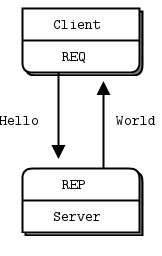

Networking
It's good for you health
by Alexandre Garcia Mayans
Let's see ...
- socket theory
- socket fun
- zeromq
- wireshark
Socket theory
- so what's a socket anyway ?
- the two types of internet sockets
- a brief note on unix domain sockets
- nothing on X25 sockets
- network stuff
So what's a socket anyway ?
- an endpoint of a connection across a computer network
- a way to speak to other programs using standard unix file descriptors
the two types of internet sockets
(ok I lied)
- stream (SOCK_STREAM)
- connected (TCP)
- reliable and ordered but slow
- datagram (SOCK_DGRAM)
- connectionless (UDP)
- unreliable and unordered but fast
- raw (RAW_SOCKET)
a brief note on unix domain sockets
- exist only on local computer
- secure: cannot be accessed remotely
- do not require a properly configured network
- are ipc secure: file permissions can be configured on the socket
- support both connected and connectionless modes
- use the same API as internet sockets
network stuff
- application layer (telnet, ftp, ...)
- host-to-host transport layer (TCP, UDP)
- internet layer (IP and routing)
- network access layer (Ethernet, wi-fi, ...)
Let's play with netcat!
who does NOT like to be confused with nyancat!
# server
nc -l <port>
# client
nc <host> <port>
# monitoring
netstat -c -t -a
Socket fun
You've got to know how it hurts.
Hugely inspired by beej's guide to networking
getaddrinfo()
Prepare to launch!
#include <sys/types.h>
#include <sys/socket.h>
#include <netdb.h>
int getaddrinfo(const char *node, // e.g. IP or DNS resolvable name
const char *service, // e.g. "http" or port number
const struct addrinfo *hints,
strict addrinfo **res);
getaddrinfo()
server sample code
int status;
struct addrinfo hints;
struct addrinfo *servinfo; // will point to the results
memset(&hints, 0, sizeof hints); // make sure the struct is empty
hints.ai_family = AF_UNSPEC; // don't care IPv4 or IPv6
hints.ai_socktype = SOCK_STREAM; // TCP stream sockets
hints.ai_flags = AI_PASSIVE; // fill in my IP for me
if ((status = getaddrinfo(NULL, "3490", &hints, &servinfo)) != 0) {
fprintf(stderr, "getaddrinfo error: %s\n", gai_strerror(status));
exit(1);
}
// servinfo now points to a linked list of 1 or more struct addrinfos
// ... do everything until you don't need servinfo anymore ....
freeaddrinfo(servinfo); // free the linked-list
getaddrinfo()
client sample code
int status;
struct addrinfo hints;
struct addrinfo *servinfo; // will point to the results
memset(&hints, 0, sizeof hints); // make sure the struct is empty
hints.ai_family = AF_UNSPEC; // don't care IPv4 or IPv6
hints.ai_socktype = SOCK_STREAM; // TCP stream sockets
status = getaddrinfo("www.example.net", "3490", &hints, &servinfo);
// servinfo now points to a linked list of 1 or more struct addrinfos
socket()
Get the File Descriptor!
#include <sys/types.h>
#include <sys/socket.h>
int socket(int domain, int type, int protocol);
socket()
sample code
int s;
struct addrinfo hints, *si;
// do the lookup
memset(&hints, 0, sizeof hints);
hints.ai_family = AF_UNSPEC;
hints.ai_socktype = SOCK_STREAM;
hints.ai_flags = AI_PASSIVE;
getaddrinfo("www.example.com", "http", &hints, &si);
//TODO: error checking
//TODO: walk the linked list
s = socket(si->ai_family, si->ai_socktype, si->ai_protocol);
bind()
What port am I on?
#include <sys/types.h>
#include <sys/socket.h>
int bind(int sockfd, struct sockaddr *my_addr, int addrlen);
bind()
server sample code
struct addrinfo hints, *si;
int sockfd;
memset(&hints, 0, sizeof hints);
hints.ai_family = AF_UNSPEC;
hints.ai_socktype = SOCK_STREAM;
hints.ai_flags = AI_PASSIVE;
getaddrinfo(NULL, "3490", &hints, &si);
// make a socket
sockfd = socket(si->ai_family, si->ai_socktype, si->ai_protocol);
// bind it to the port we passed in to getaddrinfo()
bind(sockfd, si->ai_addr, si->ai_addrlen);
bind()
"Address already in use"
// lose the pesky "Address already in use" error message
if (setsockopt(listener, SOL_SOCKET, SO_REUSEADDR, &(int){ 1 }, sizeof(int)) < 0) {
perror("setsockopt");
exit(-1);
}
// on kernels before 3.12.x you also need SO_REUSEPORT
if (setsockopt(listener, SOL_SOCKET, SO_REUSEPORT, &(int){ 1 }, sizeof(int)) < 0) {
perror("setsockopt");
exit(-1);
}
connect()
Hey, you!
#include <sys/types.h>
#include <sys/socket.h>
int connect(int sockfd, struct sockaddr *serv_addr, int addrlen);
connect()
client sample code
struct addrinfo hints, *si;
int sockfd;
memset(&hints, 0, sizeof hints);
hints.ai_family = AF_UNSPEC;
hints.ai_socktype = SOCK_STREAM;
getaddrinfo("www.example.com", "3490", &hints, &si);
// make a socket
sockfd = socket(si->ai_family, si->ai_socktype, si->ai_protocol);
// connect
connect(sockfd, si->ai_addr, si->ai_addrlen);
listen()
Will somebody please call me?
int listen(int sockfd, int backlog);
accept()
"Thank you for calling port 3490. Please leave a message after the tone."
#include <sys/types.h>
#include <sys/socket.h>
int accept(int sockfd, struct sockaddr *addr, socklen_t *addrlen);
accept()
server sample code
struct sockaddr_storage their_addr;
socklen_t addr_size = sizeof(their_addr);
struct addrinfo hints, *si;
int sockfd, new_fd;
memset(&hints, 0, sizeof hints);
hints.ai_family = AF_UNSPEC;
hints.ai_socktype = SOCK_STREAM;
hints.ai_flags = AI_PASSIVE;
getaddrinfo(NULL, "3490", &hints, &si);
sockfd = socket(si->ai_family, si->ai_socktype, si->ai_protocol);
bind(sockfd, si->ai_addr, si->ai_addrlen);
listen(sockfd, 10);
accept_fd = accept(sockfd, (struct sockaddr *)&their_addr, &addr_size);
// ready to send and receive with accept_fd
send() and recv()
Talk to me baby!
#include <sys/socket.h>
int send(int sockfd, const void *msg, int len, int flags);
int recv(int sockfd, void *buf, int len, int flags);
sendto() and recvfrom()
Oppa D-GRAM style!
#include <sys/socket.h>
int sendto(int sockfd, const void *msg, int len, unsigned int flags,
const struct sockaddr *to, socklen_t tolen);
int recvfrom(int sockfd, void *buf, int len, unsigned int flags,
struct sockaddr *from, int *fromlen);
close() and shutdown()
Get outta my face!
#include <unistd.h>
int close(int sockfd);
#include <sys/socket.h>
// how is either:
// 0 - receives are blocked
// 1 - sends are blocked
// 2 - receives and sends are blocked (like close() but without actually "closing" the fd)
int shutdown(int sockfd, int how);
getpeername()
Who are you?
#include <sys/socket.h>
int getpeername(int sockfd, struct sockaddr *addr, int *addrlen);
gethostname()
Who am I?
#include <unistd.h>
int gethostname(char *hostname, size_t size);
zeromq
Let's do something nice !
some simple patterns
- req/rep and pair
- pub/sub
- push/pull
- router/dealer
req/rep and pair
pub/sub

push/pull

router/dealer

Wireshark